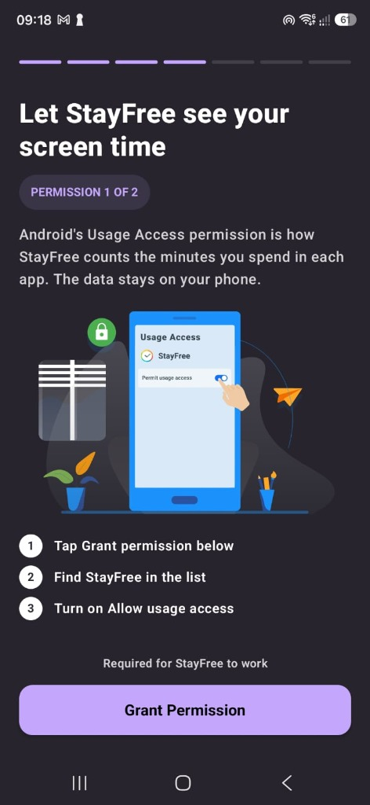
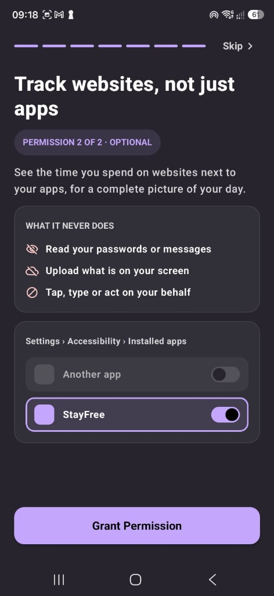
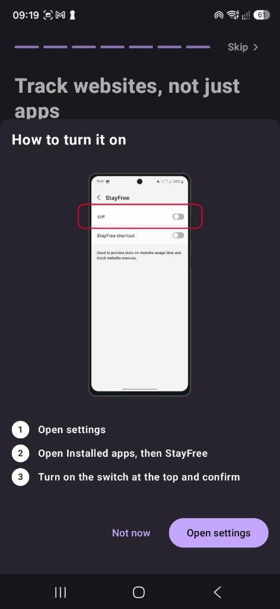
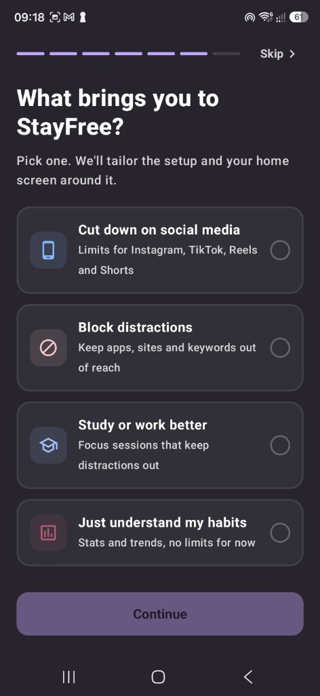
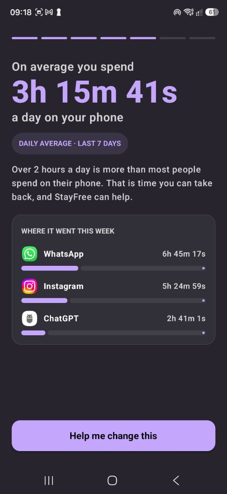
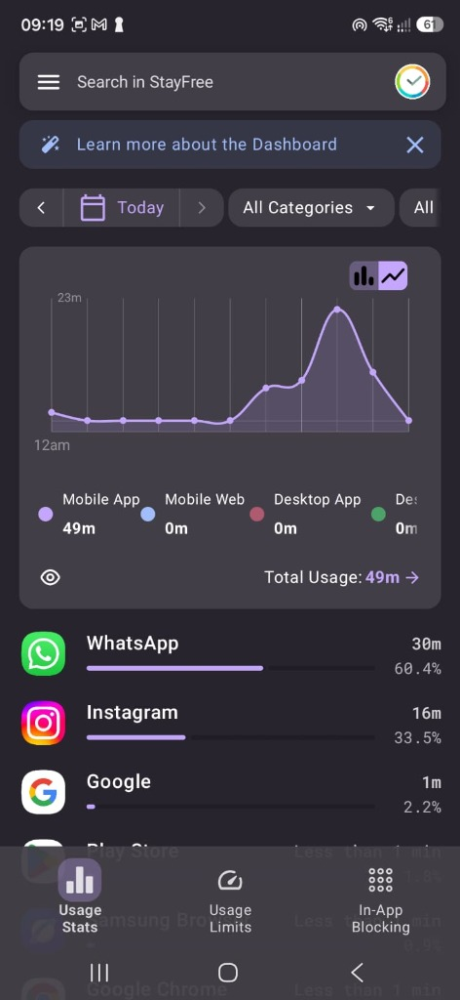
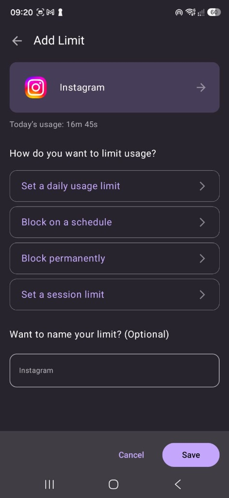
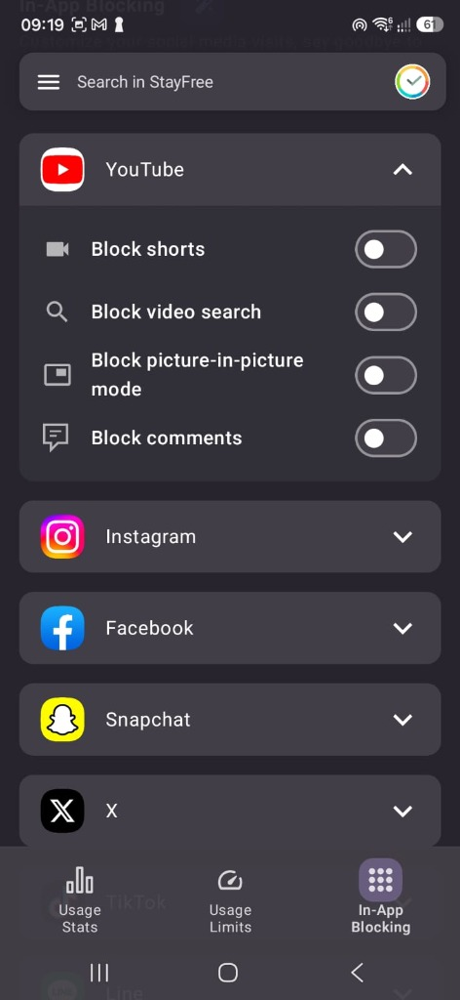
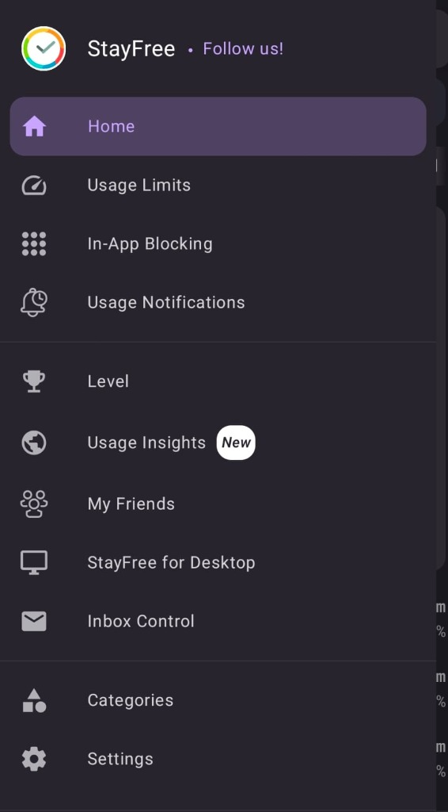

Download the official StayFree - Screen Time & App Limit app from the Google Play Store on your Android handset. When opening the app for the first time, StayFree guides you through a privacy-conscious two-step permission configuration.

Permission 1: Android Usage Access

Permission 2: Optional Web Tracking

Accessibility Settings Toggle
Figure 4.1: Initial permission walkthrough. StayFree operates locally on your device without sending private personal data to cloud servers.
Follow these exact setup steps:
- Permission 1 (Usage Access - Mandatory): Tap Grant Permission. Android will open Usage Access settings. Scroll to StayFree and switch Allow usage access to ON. This allows StayFree to monitor which application is active on screen and track elapsed minutes. All usage logs remain strictly on your physical phone.
- Permission 2 (Web Tracking - Optional but Recommended): Tap Grant Permission, then follow the prompt into Settings > Accessibility > Installed apps. Select StayFree and toggle the switch to ON. This enables StayFree to track URLs visited in Chrome or Samsung Internet, closing the common student loophole of browsing Instagram or Reddit via mobile web when the app is locked.
- Privacy Safeguard Check: Notice StayFree's explicit security commitment on the permission screen: it never reads your passwords or messages, never uploads screen contents, and never taps or types on your behalf.
Digital wellness requires clear intentionality. Immediately after permissions are granted, StayFree prompts you to declare your personal objective and computes an instantaneous 7-day retrospective usage audit.

Declare Your Wellness Objective

7-Day Real Consumption Audit
Figure 4.2: Tailoring your wellness focus and facing real-world screen time data (over 3 hours daily on social media and chat apps).
How to configure your baseline:
- Choose Your Primary Goal: For university students, select either "Cut down on social media" (tailors limits for Instagram, TikTok, Reels, and Shorts) or "Study or work better" (optimizes focus sessions and isolates exam revision blocks).
- Face the Unvarnished Baseline: StayFree scans your recent Android system logs to display your genuine daily average over the past 7 days (e.g., 3h 15m 41s per day). The Where it went this week card shows exact hours lost to messaging, short videos, and AI chatbots.
- Commit to Progress: Tap the purple "Help me change this" button. Recognizing where your time leaks occur is the first psychological step toward reclaiming study hours.
StayFree's primary Usage Stats dashboard provides rich visual telemetry into your daily patterns, replacing vague guesswork with actionable data.

Live Usage Stats: Hourly Activity Curve & App Breakdown
Figure 4.3: Real-time telemetry dashboard. The hourly activity curve highlights distraction peaks, while category pills isolate mobile apps, mobile web, and desktop usage.
Key components to inspect daily:
- Hourly Activity Curve: The wave chart displays your minute-by-minute activity throughout the 24-hour cycle. Notice the sharp peak in the afternoon (e.g., 23m of screen time in a single hour) — this exposes your natural post-lunch procrastination window.
- Cross-Platform Breakdown: Filter between Mobile App, Mobile Web, Desktop App, and Desktop Web to ensure you aren't substituting mobile phone scrolling with laptop browsing.
- App Percentage Breakdown: StayFree lists apps in descending order with exact minutes and percentage shares (e.g., WhatsApp at 60.4%, Instagram at 33.5%, Google at 2.2%), showing precisely which platform requires an active limit.
Instead of relying on fragile willpower when study fatigue strikes, set explicit boundaries using the Usage Limits tool.

Add Limit Interface: 4 Distinct Control Modes
Figure 4.4: Granular limit configuration. Choose between daily usage caps, scheduled timetable blocks, session timers, or permanent exam locks.
To create your limit:
- Tap the Usage Limits tab in the bottom bar, select the '+' button, and tap your target distraction app (e.g., Instagram).
- Choose from 4 tailored limiting modalities:
- Set a daily usage limit: Choose a firm cap (e.g., 30 minutes total per day). Once exhausted, StayFree locks the app until midnight.
- Block on a schedule: Define active lecture or library study hours (e.g., Mon–Fri, 9:00 AM to 5:00 PM) during which the app is strictly unavailable.
- Set a session limit: Limit each individual app opening to 10 minutes. When 10 minutes lapse, StayFree closes the app, disrupting endless mindless doomscrolling loops.
- Block permanently: A temporary total lockdown for intensive finals preparation weeks.
- Tap Save in the bottom right corner to arm the restriction.
Standard app blockers force an impossible dilemma: either block YouTube completely and lose access to course lectures and coding tutorials, or leave it open and get sucked into short-form videos. StayFree solves this with revolutionary In-App Blocking.

Surgical In-App Blocking: Strip Distractions, Keep Lectures
Figure 4.5: StayFree's in-app feature toggles. Disable algorithmic trap doors (Shorts, recommendations, comments) while preserving legitimate educational video access.
How to configure surgical focus:
- Navigate to the In-App Blocking tab from the bottom navigation bar.
- Tap YouTube to expand its granular controls:
- Block shorts: Toggles off the vertical video reel feed entirely. You can watch long-form lectures without the algorithm tempting you into 45-second dopamine loops.
- Block video search: Prevents wandering off-task into non-academic music videos or gaming channels during study sessions.
- Block picture-in-picture mode: Stops floating mini-players from playing videos in the background while taking notes.
- Block comments: Eliminates toxic flame wars and rabbit-hole comment sections under videos.
- Repeat for Instagram, Facebook, Snapchat, and X (Twitter) to turn hyper-stimulating feeds into quiet utility tools.
To build a resilient digital environment that withstands exam stress, open StayFree's side menu to synchronize across your laptop, batch distracting notifications, and lock limits behind behavioral friction.

StayFree Navigation Menu: Desktop Sync, Inbox Control & Settings
Figure 4.6: Comprehensive hub controls. Connect desktop browser extensions, manage notifications, and enable anti-tamper security locks.
Essential settings to enable:
- StayFree for Desktop: Tap this menu item to pair your phone with the free StayFree Chrome/Firefox extension on your study laptop via QR code. This unifies your total screentime metrics across mobile and computer so you cannot dodge phone limits by switching to your web browser.
- Inbox Control: Activate notification batching so social alerts arrive in controlled batches (e.g., at 1:00 PM and 7:00 PM) rather than interrupting your train of thought every 4 minutes.
- Security & Anti-Cheating PIN: Open Settings > Security and enable a 4-digit PIN code alongside a 60-second edit delay. Whenever you feel an impulse to remove an app limit, the 60-second countdown provides a mandatory cooling-off pause that lets your rational prefrontal cortex regain control.
- Prevent App Uninstallation: Toggle this option so Android blocks attempts to uninstall StayFree while a study lock or session timer is active.